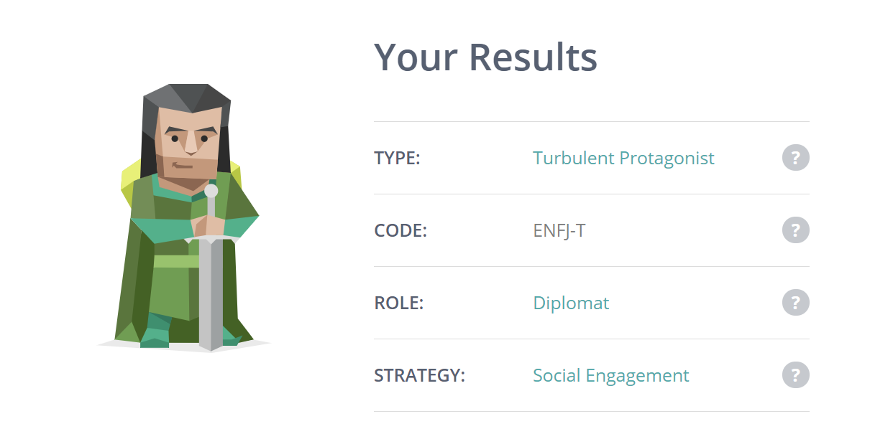
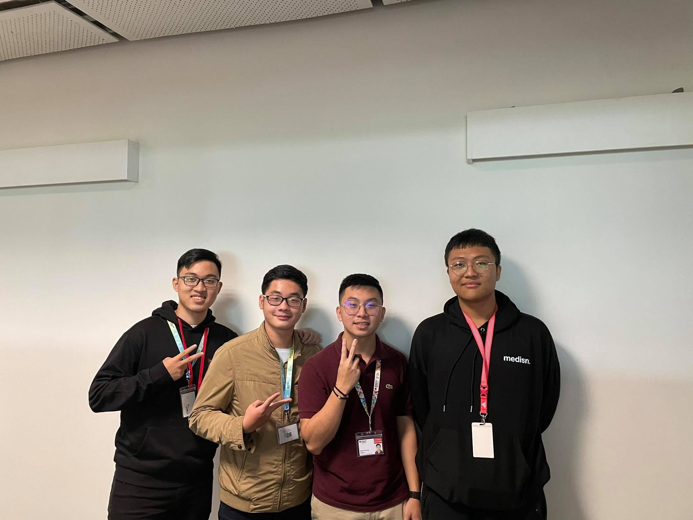

To perform well in a group project, I need to determine precisely not only my potential but also my personality and characteristics so that I can get on well with other members of the team to enhance the connection and understanding between others. Below is the MBTI psychological test that I took to identify the type of personality suitable for me.
https://www.16personalities.com/enfj-personality
The Myers – Briggs test indicates that I am a Protagonist with the urge to be the center of attention, choose to lead when given a chance, have the willingness to see through many different views and solutions, prefer changes, always be caring, compassionate, and warm. I also rarely feel satisfied with any achieved targets and always be well – prepared for any situation. As an extrovert, I will feel pleased if I can join in with a team full of energetic people who always show passion and joy through every work that they do. A creative team with unique solutions and perspectives will attract me the most as I prefer changes and innovations. Because I always tend to be well – prepared before working on any new project, a team with a sophisticated plan and scope will be appropriate for me to improve our work in the future.
Fortunately, I have joined a team that is suitable for my type of personality.
 Le NgocDao
Kha Tuan
(Me)
He is the first semester IT undergraduate who creatively thinks of new ideas and logical solutions to new problems. He is the software developer of our team who is useful whenever we are stuck with old concepts as he can come up with a new perspective that allows us to change our view of a problem, which will help us overcome our difficulties and boost our work's productivity. However, he is not a quite sociable person like me, so it can be challenging for us to work together effectively. Nevertheless, more communication and group meetings will help us form a deeper connection with each other and increase the cohesion among others in the team. While Duy and I have a determination to keep up with the targets that we set up before, Thuan does not have that consistency, which affects our work quality. So, we will try our best to encourage him to finish his work meticulously and adequately, which will have a positive effect on our project’s outcome.
Duy has the same personality type as me as a protagonist. He is the first-semester IT undergraduate, has an interest in AI, and he is the project manager of the team who comes up with new ideas and solutions to the problem. We also have elaborate discussions to identify how we will work as a team and plan for the next targets. Because we both share the same progressive thinking, there is a compatibleness between the two of us, and we are willing to receive advice from each other to perform better. We also cooperate to give detailed instructions on using technological tools such as Git, GitHub, and support other team members to finish their tasks properly. His dedication and meticulousness are essential for the team. He is the person we can rely on and seek help when we engage in any problem. Although there are arguments between us on finding solutions that benefit our team the most, we always agree on the final one and resolve our conflicts.
The last person I would like to mention is Suk. He is half Korean and has the same interest in software development as me. He has a role as a researcher and software developer. He has a personality type of a Mediator, so he is very thoughtful and open-minded to every point of view. He is quite shy, in contrast to my being active in any group meeting. However, he makes a significant contribution to the development of our project with his passion and dedication. As he is unlikely to express his own opinions to other members, we will do everything to help him feel comfortable showing his thoughts and ideas that will play an essential role in the project's development. Although some of his ideas and solutions are helpful, they can be too impractical and out of scope, which can be difficult for Duy and me as we prefer more realistic ones that we can be well – prepared with. Thus, we will have thorough discussions of each of them’ s disadvantages and make some modifications to improve our work's efficiency.
Back to homecreated with
TEMPLATED .